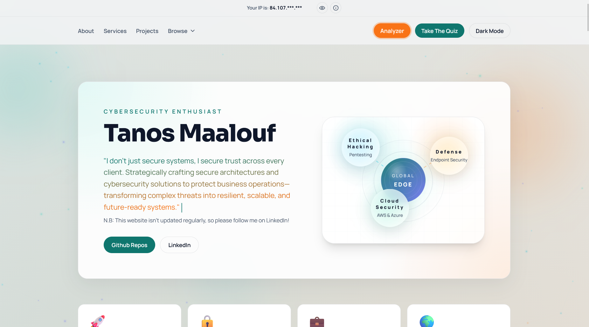
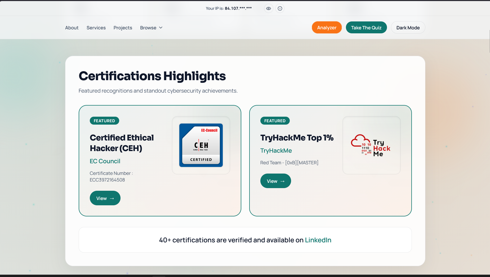

Inspiratie
Inspiratie voor mijn portfolio
Voor mijn portfolio heb ik inspiratie gehaald uit de website van Tanos Maalouf. Ik vond zijn website via LinkedIn. Hij werkt in ICT en cybersecurity, en zijn website gebruikt een duidelijke hero, rustige cards en sterke certificaten-secties.
Startpagina inspiratie

Certificaten inspiratie

Wat heb ik hiervan gebruikt?
- Een rustige hero-sectie met duidelijke titel en knoppen.
- Een overzichtelijke certificaten-sectie met grotere highlight cards.
- Projectkaarten met screenshots en korte uitleg.
- Een professionele uitstraling, maar simpeler en passend bij mijn eigen portfolio.